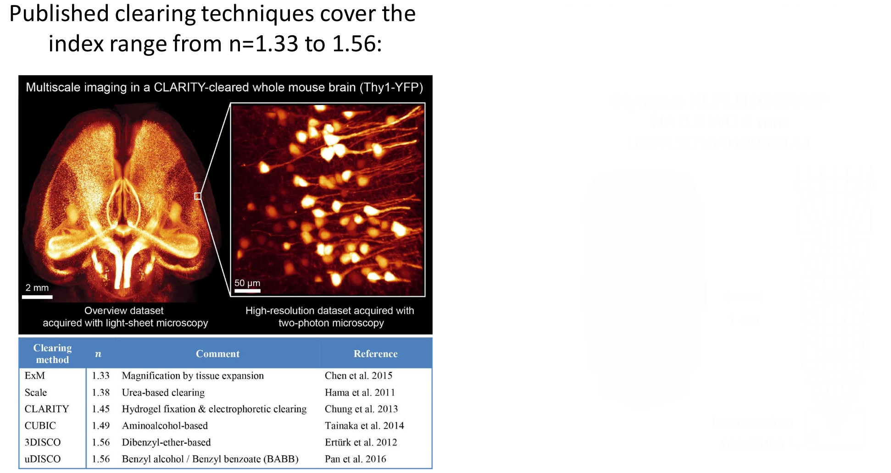
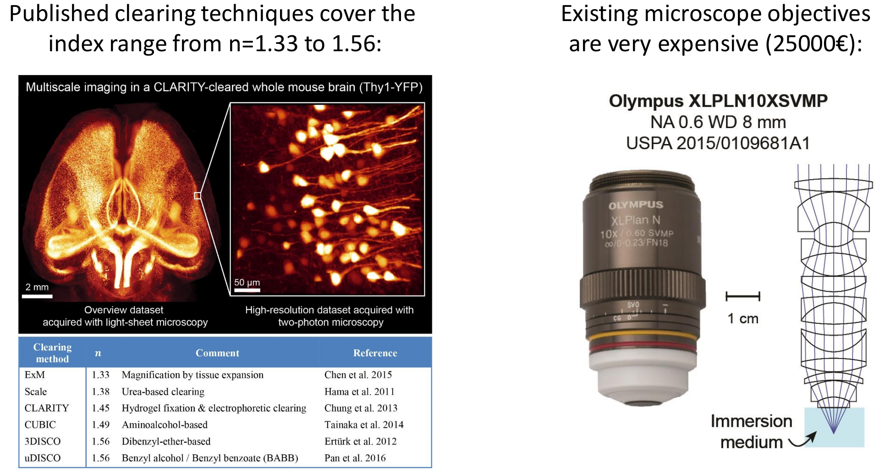
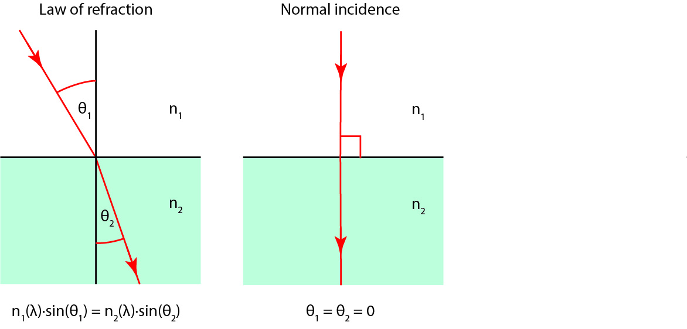
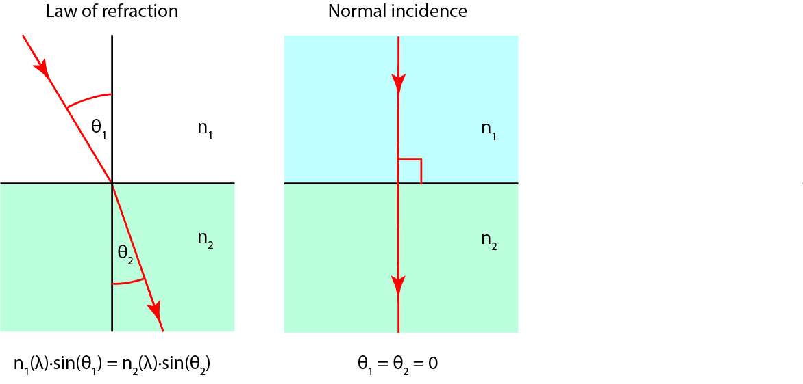
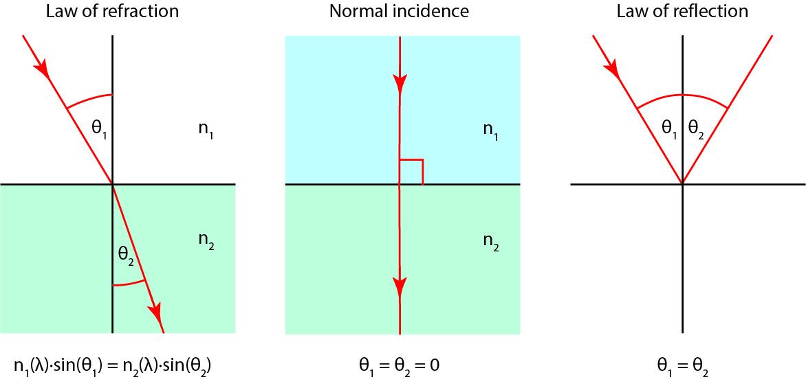
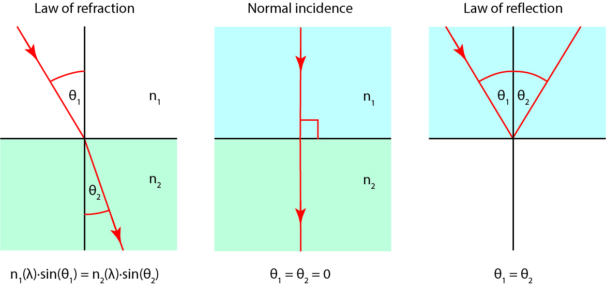
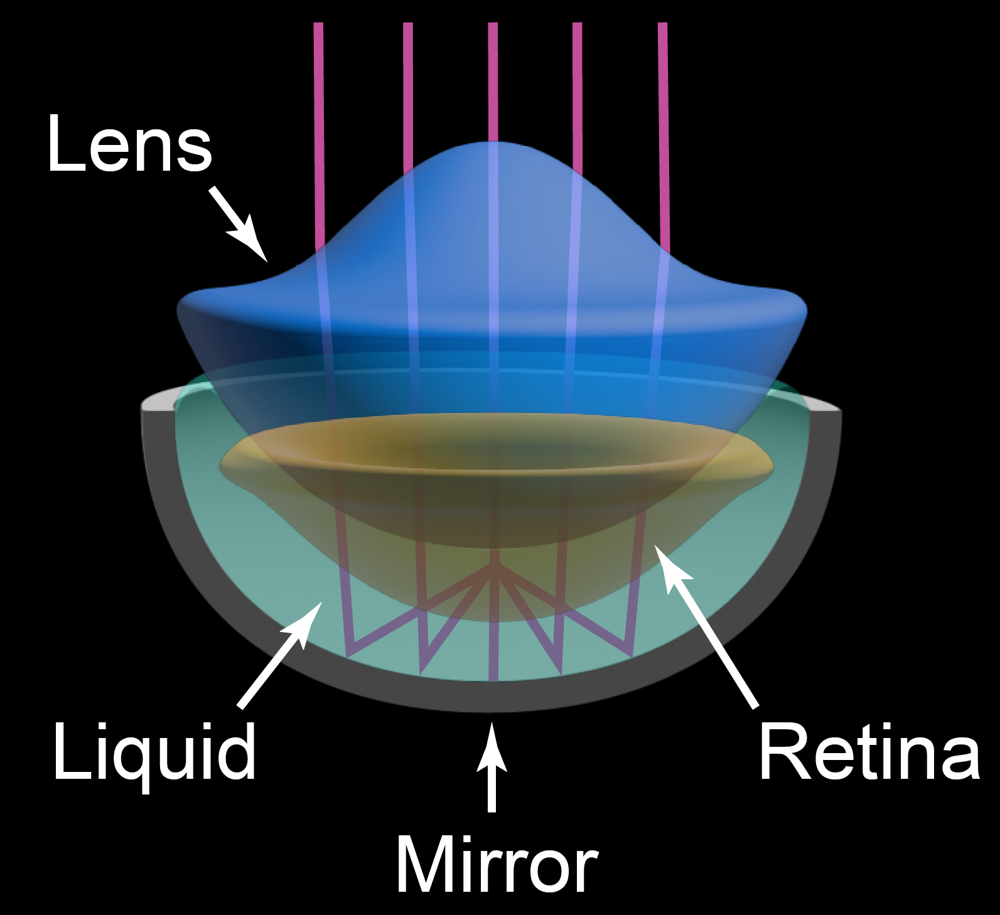

Reflective multi-immersion microscope objectives
Fabian Voigt (fvoigt@fas.harvard.edu)
Engert Laboratory, Harvard University
(Helmchen Lab, University of Zurich)
BABB: Chicken embryo (7 days)
How to design better objectives for imaging cleared tissue?
How to design better objectives for imaging cleared tissue?
Ideal: Large FOV (>1 mm) & NA >0.7 & large working distance (>1 cm) & all media
Quick (re)introduction into geometrical optics

Quick (re)introduction into geometrical optics
Quick (re)introduction into geometrical optics
Quick (re)introduction into geometrical optics
Quick (re)introduction into geometrical optics

Photo by David Liittschwager

Michael Land: "Image formation by a concave reflector in the eye of the scallop, Pecten maximus":
J Phys (1965)
From Schmidt Telescope to Schmidt Microscope
Animation by Lachlan Whitehead
The Multi-Immersion Schmidt Objective & Setup
Animation by Lachlan Whitehead